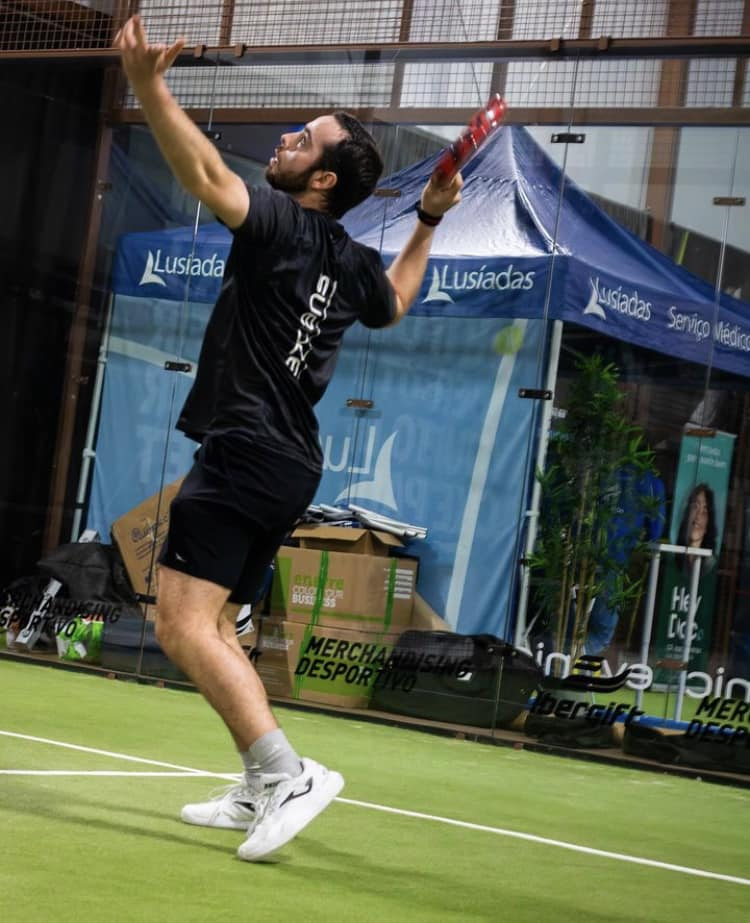
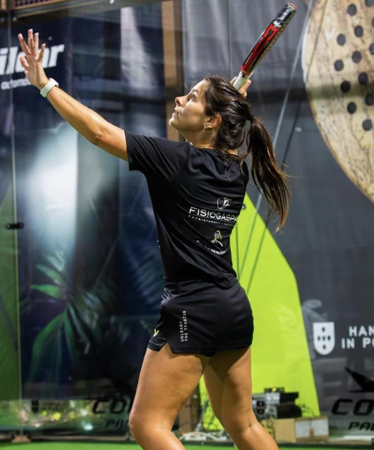

Regulamento de Competição · Edição 2027
As regras do jogo, antes do primeiro ponto
O regulamento diz quem pode jogar, como se formam as duplas, como se disputa cada evento e como se somam os pontos. É por ele que a organização decide qualquer dúvida em court.
Versão provisória Valor de inscrição: 50 € + IVA por jogador e por evento, Masters incluído. Os prazos são anunciados nesta página.
Para que serve
Define as empresas e os jogadores admitidos, as 3 categorias e os 3 níveis de jogo, o formato dos eventos e do Masters, a pontuação das duplas e das empresas, as faltas de comparência e a substituição de jogadores.
Os casos que o regulamento não prevê são decididos pelos Organizadores.
Aceitação
Quem inscreve uma equipa declara, na ficha de inscrição, que leu e aceita o regulamento. Sem essa declaração, a ficha não é enviada.
Cabe ao capitão de cada dupla cumprir e fazer cumprir o regulamento durante a prova.


O essencial em 6 pontos
Quem pode jogar
Empresas com sede ou delegação no concelho de Oeiras e jogadores com 18 ou mais anos. Em cada dupla, pelo menos 1 jogador é funcionário ou colaborador da empresa.
Categorias e níveis
Masculinos, Femininos e Mistos, nos níveis Iniciante (FPP 6), Intermédio (FPP 5) e Avançado (FPP 4 a 1). A dupla inscreve-se no nível do jogador mais forte. Sem 6 duplas femininas num nível, essas duplas jogam no quadro de Mistos.
Limites
Até 3 duplas da mesma empresa por quadro. Cada quadro tem um mínimo de 6 duplas e uma referência de 18; a organização pode admitir mais, em múltiplos de 3, até ao limite de courts disponível.
Formato
Grupos de 3 duplas, todos contra todos (2 jogos garantidos). As 2 primeiras de cada grupo seguem para as eliminatórias, a eliminar até à final. Jogos à melhor de 3 sets: 2 sets de 6 jogos com tie-break aos 6-6, e super tie-break a 10 pontos no 3.º set.
Masters
As 6 duplas mais pontuadas de cada quadro, depois do Evento 1 e do Evento 2 (até 54 duplas no total). 2 grupos de 3, meias-finais e final, à melhor de 3 sets.
Comparência
Tolerância de 10 minutos. A falta dá derrota por 6-0, 6-0; a segunda falta no mesmo evento exclui a dupla desse evento.
Este resumo não substitui o regulamento. Em caso de diferença, vale o texto do PDF.
Regulamento lido?A ficha de inscrição pede os dados da empresa, das duplas e de cada jogador.
Inscrever equipa